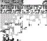

Super Smash Bros. Melee
This article must comply with the non-Pokémon glitches guideline.
| Super Smash Bros. Melee | |
| Wikipedia link | Super Smash Bros. Melee |
| Developer(s) | HAL Laboratory |
| Publisher(s) | Nintendo |
| Platform(s) | Nintendo GameCube |
| Release date(s) | November 21, 2001 (Japan) December 3, 2001 (North America) May 24, 2002 (Europe) May 31, 2002 (Australasia) |
Super Smash Bros. Melee is the second game in the popular Super Smash Bros. series of Nintendo fighting games. It was released for Nintendo GameCube.
Some parts of this article have not yet been fully reviewed by a member of this wiki's staff or QC team.
| |

|
Data from the Internet can be inaccurate or false, and it is easy to misremember information. For this reason there is more likely to be incorrect information in this article. This template will be removed once the information is peer-reviewed and tested by a staff or QC member. |
This article lacks images.
| |
|  | Emulator screenshots are preferred to pictures taken with a camera of a capture card; however, a medium-quality image is better than no image. Any contributions are highly appreciated! |
Contents
Black hole glitch
The black hole glitch is a glitch in Super Smash Bros. Melee.
It creates something on the field that when touched, character that touched it will get hit, receiving a few hundred damage and bounce off, get stuck in it for a bit and take even more damage, or get stuck and get their damage meter raised up to 999% in a split second and about minute later the player is sent flying off.
Procedure
- Start a Melee match with Peach on one team with either Falco or Fox, and then anyone on the other team with Falco or Fox. There need to be Super Scopes available in this match.
- When the match starts do the infinite Super Scope glitch with the fourth character that is not Falco, Fox, or Peach.
- Have the Falco/Fox on opposing teams face each other on ledges of equal height (they need to be a bit far away for it to work) and both use Shine (B+down).
- Now have the character with the Super Scope get behind the Falco/Fox on his team and keep shooting. Eventually they will keep getting bounced between both Falco/Foxes and with more and more they keep countering each other. Stop when it is making a weird sound and there are lots of green bubbles.
- With the Reflectors still on, have Peach throw some vegetables into the big line. If the player is doing it correctly, the vegetables will get stuck in the air and spin. The continous hits create the damage.
- Now when there are a lot of vegetables stuck in what is now the "black hole" the Falco/Foxes can stop using Shine.
How it works
Peach's vegetables, which do damage, are being "juggled" with counter bubbles. When the glitch starts, once the bubbles stop they stay there because of the vegetables.[citation needed][clarification needed]
External links
Infinite Super Scope glitch
The Infinite Super Scope glitch is a glitch in Super Smash Bros. Melee.
It's a way of making a Super Scope have infinite bullets.
Procedure
- Start a practice or Melee match, wait for a super scope to appear and pick it up.
- Fire five normal un-charged shots, followed by two fully charged shots.
- While charging a third charged shot, have one of the other players hit you.
Uses
- This is used in the Black Hole glitch.
External links
Kamikaze glitch
The Kamikaze glitch is an exploit in Super Smash Bros. Melee. It is more of a physics exploit than a glitch, but is referred to as a glitch by the community.
It causes Mr. Game and Watch to charge through the field (and fall off from the side) at incredible speed, doing over 100% damage to anybody hit.
Requirements
- The player must have unlocked Mr. Game and Watch.
- Set up a battle with two of the players being Mr. Game and Watch and the other either Ness or Samus.
Procedure
- Have the character with the strong projectile fire fully charged projectiles into Mr. Game & Watch's bucket.
- Have any other character than Mr. Game & Watch shield.
- While they are doing so, use Oil Panic.
Mr. Game & Watch will fly across the screen rapidly. If any other characters are in his path they will be swept away too.